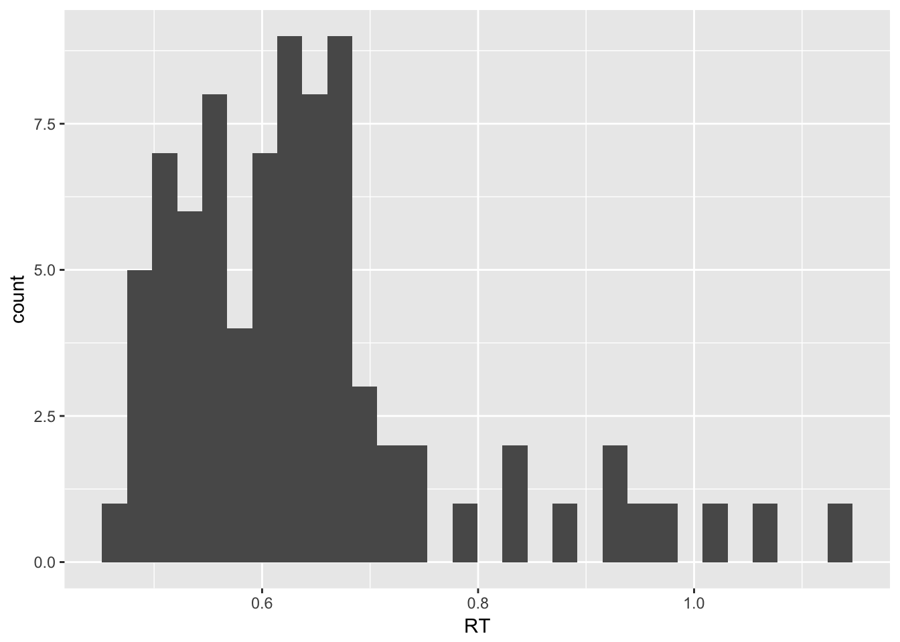
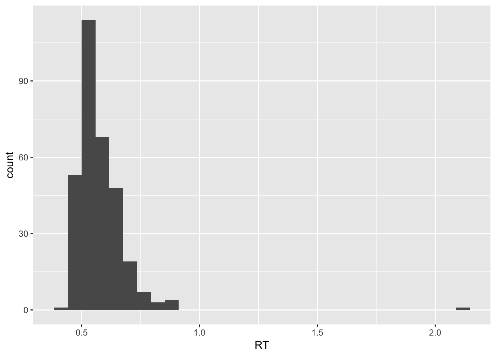
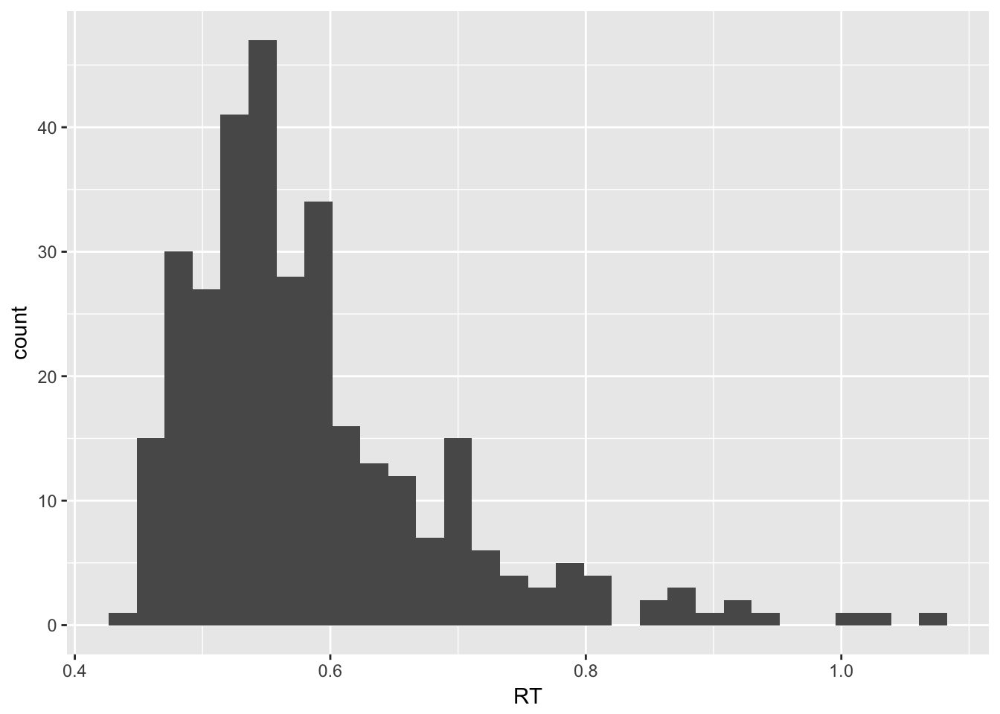
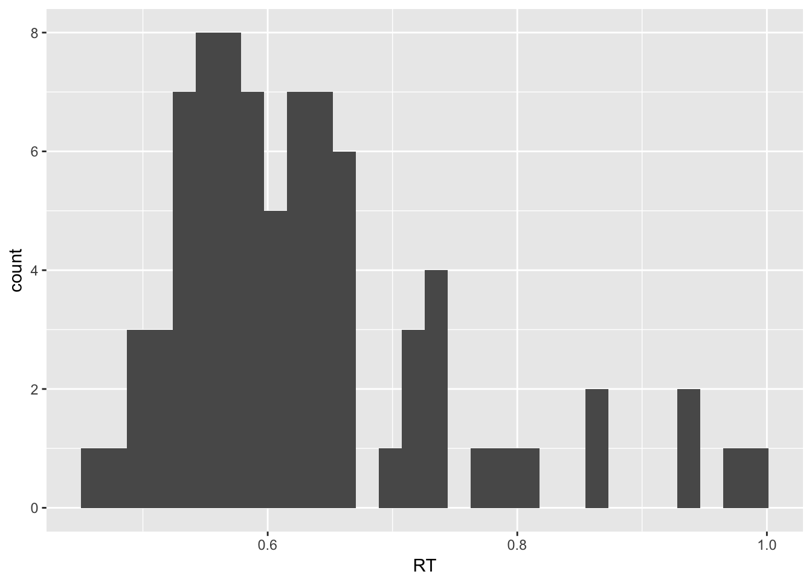
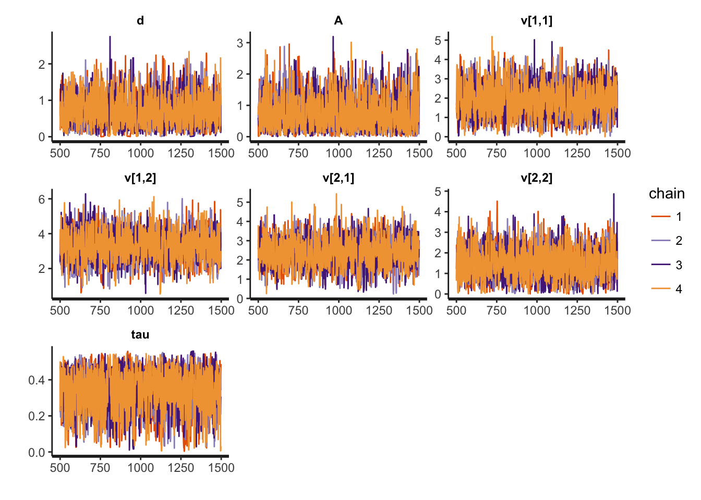
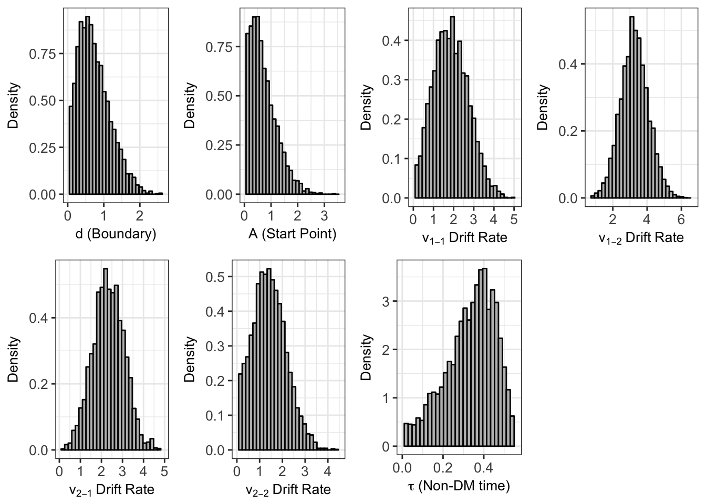

hBayesDMで反応時間のモデリング!
この記事は，Stan Advent Calendar 2017の23日目の記事です1。
Stan Advent Calendar 2017の16日目の記事では，hBayesDMのインストールから遅延割引課題データの認知モデリングをやってみました（hBayesDMが初めての方は，リンク先の16日目の記事をご確認ください）。今回は，反応時間の認知モデリングを行ってみましょう。
Linear Ballistic Accumulator model
反応時間のモデルとしては，Drift-Diffusion model (DDM)やLinear Ballistic Accumulator model (LBAモデル)があります。どちらのモデルも，刺激が呈示されてから反応が出力されるまでの情報（エビデンスという）の蓄積過程をモデル化しています。つまり，時間が経つにつれて脳に蓄積されていく情報がある閾値に到達した場合に，反応が出力されると考えます。なお，Drift-Diffusion modelについては，hBayesDMでは，choiceRT_ddm関数が用意されており，LBAモデルについては，hBayesDMではchoiceRT_lba関数が用意されています。今回は，hBayesDMで用意されているLBAモデルについて扱います。
LBAモデルの詳細は，過去の記事をご確認いただくとして，以下の図で簡単にLBAモデルを説明します。LBAモデルでは，Non Decision Time（非決定時間：情報の蓄積以外の刺激の読み込みや反応の出力などにかかる時間）とDecision Time（情報の蓄積過程にかかる時間）に分けて，情報の蓄積過程では，開始点から始まって，特定の傾きをもった直線で表現される情報の蓄積過程があり（この傾きをドリフト率という），それが閾値に到達した際に反応が出力されます。そして，このLBAモデルを用いて，反応時間のデータから，それぞれのパラメータを推定します。hBayesDMのLBAモデルの関数である，choiceRT_lbaでは，閾値(d)2，開始点の上限（A），ドリフト率（d），非決定時間(tau)が推定されます。

データの準備
使用するパッケージ
ベイジアン認知モデリングのためにhBayesDM，データ整形のためにtidyverse，反応時間データの生成のためにrtdistsをロードします。
library(hBayesDM)
library(tidyverse)
library(rtdists)反応時間データの生成のためのパラメータの準備
今回は，2条件からなる２選択肢の課題を，それぞれの条件で300試行反応したデータを作ってみます。本当は参加者を複数にして，階層ベイズにしたかったのですが，それだとかなり時間がかかってしまうので，今回は参加者１名のデータを作ります。今回は実データではなく，rtdistsのrLBA関数を使ってシミュレーション的にデータ生成を行います。まず，この反応時間データの生成のために，閾値(d)，開始点の上限（A），ドリフト率（v），非決定時間(tau)を以下のように設定しました。パラメータの値は，以前に私がおこなったシミュレーションデータから適当にもってきました。
set.seed(12345)
numberTrials <- 400 #試行数
numberConditions <- 2 #条件数
A = 0.3
b = 1.0
d = b-A
tau = 0.30
v1_c1 = 1.8
v2_c1 = 3.0
v1_c2 = 3.0
v2_c2 = 1.8
s = 1反応時間データの生成
上記で決めたパラメータをもとに，rtdistsのrLBA関数を使って，反応時間と選択のデータを生成します。２条件あり，それぞれ400試行にしたので，合計800試行のデータになります。
subjID <- rep(1,numberTrials*numberConditions) # subjIDを準備
condition <- rep(1:2, each=numberTrials) # 総試行数分条件を準備
rt_data_c1 <- rLBA(numberTrials, A=A, b=b, t0=tau, mean_v=c(v1_c1,v2_c1), sd_v=c(s,s)) #条件1における選択と反応時間データを生成
rt_data_c2 <- rLBA(numberTrials, A=A, b=b, t0=tau, mean_v=c(v1_c2,v2_c2), sd_v=c(s,s)) #条件1における選択と反応時間データを生成
rt_data_c12 <- rbind(rt_data_c1,rt_data_c2) #２つの条件の選択と反応時間データを結合
rt_data <- data.frame(subjID,choice=rt_data_c12$response,RT=rt_data_c12$rt,condition) #全てのデータをrt_dataに格納
head(rt_data)## # A tibble: 6 x 4
## subjID choice RT condition
## * <dbl> <dbl> <dbl> <int>
## 1 1.00 2.00 0.563 1
## 2 1.00 2.00 0.602 1
## 3 1.00 1.00 0.684 1
## 4 1.00 2.00 0.590 1
## 5 1.00 2.00 0.683 1
## 6 1.00 2.00 0.505 1データの確認
各条件の各選択肢に対する反応時間の分布をプロットします。
条件１における選択肢１に対する反応時間の分布
rt_data %>%
filter(condition==1,choice==1) %>%
ggplot(aes(x=RT))+
geom_histogram()
条件１における選択肢2に対する反応時間の分布
rt_data %>%
filter(condition==1,choice==2) %>%
ggplot(aes(x=RT))+
geom_histogram()
条件2における選択肢１に対する反応時間の分布
rt_data %>%
filter(condition==2,choice==1) %>%
ggplot(aes(x=RT))+
geom_histogram()
条件2における選択肢2に対する反応時間の分布
rt_data %>%
filter(condition==2,choice==2) %>%
ggplot(aes(x=RT))+
geom_histogram()
hBayesDM用に反応時間データを保存する
hBayesDMでは，指定された変数名でデータセットを作成し，タブ区切り.txtファイルで保存したものを解析で用いる。hBayesDMでは，データセットの変数名を固定したりファイルの形式を整えることで，複雑な階層ベイズモデリングが簡単にできるようになっている。反応時間のモデルあるchoiceRT_lbaやchoiceRT_ddmでは，以下の変数を準備する。
- subjID: 参加者ID
- choice: 課題における選択データ（1や2みたいな整数値でコード化する）
- RT: 課題における反応時間データ（秒単位なので，700msは，0.7になる）
- condition: 条件（1や2みたいなす整数値でコード化する）
これまで作成してきたデータセットのrt_dataは，hBayesDMで求められる変数名になるように整形してありますので，そのままタブ区切りテキストファイルとして保存します。
write.table(rt_data,file="rt_data.txt",sep="\t",col.names=T,row.names=F,quote=F)LBAモデルのパラメータ推定
データセットの準備ができましたので，早速ですがLBAモデルのパラメータ推定をしてみましょう。hBayesDMではLBAモデル用の関数として，choiceRT_lba_single()が用意されているので，これを使ってみます（もし複数の参加者がいて階層ベイズにしたい場合は，choiceRT_lba()を使う）。以下の引数を指定するだけで，簡単にパラメータ推定できちゃいます。
choiceRT_lba_single(data = "データ名.txt",
niter = 反復回数,
nwarmup = ワームアップに指定する反復回数,
nchain = 連鎖の数,
ncore = 並列化の際に使用するコア数,
nthin = 間引き間隔,
inits = 初期値("fixed", "random", 指定),
indPars = MCMCサンプルの要約方法("mean", "median", "mode"),
以下略)では，さっそく，サンプルデータで推定をしてみましょう！以下の１行のコードだけで，LBAモデルを用いたパラメータ推定をやってくれます。
output <- choiceRT_lba_single(data = "rt_data.txt", niter = 3000, nwarmup = 1000,
nchain = 4, ncore = 4, nthin = 2)##
## Model name = choiceRT_lba_single
## Data file = rt_data.txt
##
## Details:
## # of chains = 4
## # of cores used = 4
## # of MCMC samples (per chain) = 3000
## # of burn-in samples = 1000
## # of subjects = 1
## # of (max) trials of this subject = 800
##
## ***********************************
## ** Loading a precompiled model **
## ***********************************## trying deprecated constructor; please alert package maintainer##
## ************************************
## **** Model fitting is complete! ****
## ************************************パラメータ推定の収束
推定できたので，早速，収束を確認します。hBayesDMのplot関数やrhat()を使って，簡単にトレースプロットや\(\hat{R}\)が確認できます。収束は問題なさそうですね。
plot(output, type = 'trace')
rhat(output)## # A tibble: 9 x 1
## Rhat
## * <dbl>
## 1 1.00
## 2 1.00
## 3 1.00
## 4 1.000
## 5 1.00
## 6 1.00
## 7 1.00
## 8 1.00
## 9 1.00推定されたパラメータ
hBayesDMのplot関数を使うとパラメータの事後分布をプロットしてくれます。hBayesDMが出力するオブジェクトの中には，いろいろはいっているのですが，allIndParsには，推定したパラメータの要約統計量（推定時にmean,mode,medianが選択できる）が入っています。各パラメータのMCMCサンプルがはいっているparValsやStanの標準出力のfitなどもありますので，暇な時に確認すると便利かと思います。
output$allIndPars## # A tibble: 1 x 8
## d A v_cd1_ch1 v_cd2_ch1 v_cd1_ch2 v_cd2_ch2 tau subjID
## * <dbl> <dbl> <dbl> <dbl> <dbl> <dbl> <dbl> <int>
## 1 0.723 0.691 1.86 2.33 3.27 1.42 0.334 1plot(output)
## Drift rates (v) are numbered as follows: v[condition-choice]. For example, v[1-2] refers to the drift rate estimate for when choice==2 and condition==1.モデル適合
hBayesDMでは，printFitで情報量基準も出してくれます。デフォルトはLOOICで，指定すればWAICも出力してくれます。
printFit(output)## # A tibble: 1 x 2
## Model LOOIC
## * <chr> <dbl>
## 1 choiceRT_lba_single -0.233printFit(output, ic="waic")## # A tibble: 1 x 2
## Model WAIC
## * <chr> <dbl>
## 1 choiceRT_lba_single -1.01パラメータリカバリ
データ生成に用いた真値と推定値とでどのくらい異なるかをチェックするパラメータリカバリーをします。真値からデータ生成における誤差も結構あるので，完全には一致してないですが，一部のパラメータはそこそこ推定できているといえるかと思います。
true_parameter <- data.frame(d = d,A = A,v_cd1_ch1 = v1_c1, v_cd2_ch1 = v1_c2 ,v_cd1_ch2 = v2_c1,v_cd2_ch2 = v2_c2 ,tau = tau, subjID = 1)
check_parameter_recovery <- rbind(output$allIndPars,true_parameter)
rownames(check_parameter_recovery) <- c("Estimate", "True")
check_parameter_recovery## # A tibble: 2 x 8
## d A v_cd1_ch1 v_cd2_ch1 v_cd1_ch2 v_cd2_ch2 tau subjID
## * <dbl> <dbl> <dbl> <dbl> <dbl> <dbl> <dbl> <dbl>
## 1 0.723 0.691 1.86 2.33 3.27 1.42 0.334 1.00
## 2 0.700 0.300 1.80 3.00 3.00 1.80 0.300 1.00choiceRT_lbaの中身のStanコード
choiceRT_lba関数内で使われているStanコードをみると，Annis et al.(2016)3のStanコードが用いられています。ですので，前に私が書いたRStanによる反応時間の階層ベイズ解析やRStanによる反応時間の解析と同じことをしているのですが，hBayesDMはデータセットさえできれば１行で実施できるので，随分と楽ですね。
当初，反応時間のベイズモデルを紹介する予定でしたが，尤度関数の定義でつまづいてしまいました。その後，階層ガウシアンフィルターをStanに実装することも考えましたが，変分ベイズ近似に基づく信念の更新の実装でつまづいてしましました。もうダメかと思いましたが，反応時間のモデリングつながりでhBayesDMの紹介をすることにしました・・・↩
一般的に閾値はbと表現されますが，hBayesDMのchoiceRT_lbaは，Annis et al.(2016)のStanコードを参考にしているので，bではなく相対閾値dを推定します（b = d + Aつまり，ここで推定されるdとAを足すと一般的なbが計算される）。データ生成に使うrtdistsでは，絶対閾値bを使うので，注意が必要です。↩
Annis, J., Miller, B. J., & Palmeri, T. J. (2016). Bayesian inference with Stan: A tutorial on adding custom distributions. Behavior research methods, 1-24.↩
Ahn, W.-Y., Haines, N., & Zhang, L. (2017). Revealing neuro-computational mechanisms of reinforcement learning and decision-making with the hBayesDM package. Computational Psychiatry. 1:1. https://doi.org/10.1101/064287↩